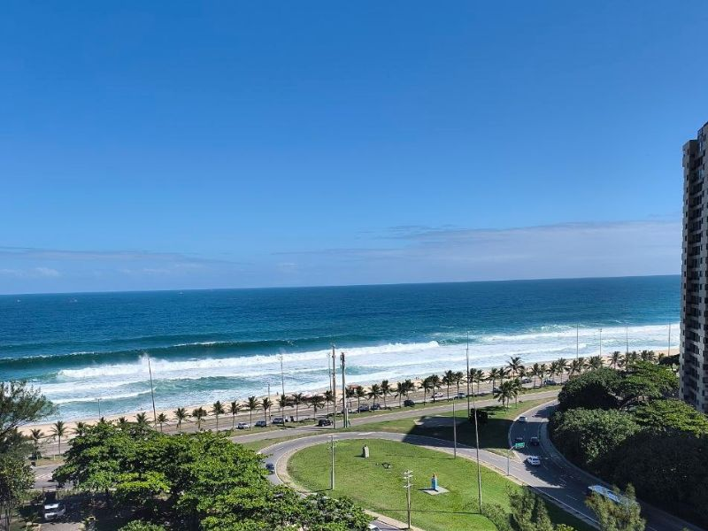

Глава 3
Каждый день — лето

Наша квартира в Барра да Тижука — океан в шаговой доступности
Основная причина, по которой я выбрал Бразилию — климат. В России у меня развивалась сильная депрессия из-за пасмурных дней, дождей, холода и ветра. Весь год я хожу здесь в шортах, сланцах и футболке. Зимой вечером надеваю кофту — это вся моя тёплая одежда.
Штат Рио-де-Жанейро — один из самых комфортных по климату. Зимой ночью температура опускается до +16 °C, днём — около +25 °C. Летом — до +40 °C, в среднем +30 °C. Южнее, во Флорианополисе и Сан-Паулу, зимой заметно холоднее — даже в пятизвёздочном отеле в Сан-Паулу я спал под двумя одеялами и грел комнату феном.
+16°C
Ночью зимой в штате Рио
21 дек
Начало лета по местному календарю
В первую же неделю после приезда мы увидели кита, который выпрыгивал прямо из океана. Там плавают дельфины и крабы, в Амазонке обитают розовые дельфины. В Рио в некоторых каналах живут крокодилы, туканы залетают на балкон, попугаи летают стаями, вальяжно разгуливают капибары. А в Фос-ду-Игуасу — водопады невероятной красоты.
Еда и кухня
Национальная кухня Бразилии — это шведский стол, где принято накладывать всё сразу: картофельное пюре, макароны, мясо, курица, что захочется. Сначала мы не понимали, как так — а теперь сами накладываем всё подряд.
Главное блюдо страны — чураско (churrasco), мясо на углях. Любимое народное блюдо — рабада (rabada), тушёный бычий хвост в скороварке с картошкой: мясо буквально тает во рту. Традиционный обед — рис, фасоль, салат и мясо.
Стрит-фуд работает по утрам и вечерам. На завтрак — пан-на-шапа (pão na chapa): поджаренные булочки с сыром, маслом, колбасой, яйцом и кофе. Кофе здесь везде: на заправках, в магазинах, где есть термос — предлагают бесплатно выпить чашечку. Чай — почти отсутствует, и то, что есть, низкого качества. Рекомендую везти запасы с собой.
Местные и социальная жизнь
Нам повезло подружиться с местными. Бразильцы открытые, с ними комфортно в общении — они всегда улыбаются и никогда не высказывают критику или недовольство в адрес другого человека. В России люди более закрыты, с серьёзными лицами, каждый ищет подвох.
С нашими местными друзьями Педро и Фабиолой мы говорим на португальском. Так как мы занимаемся сопровождением клиентов и работаем на португальском, решили — русскоязычное комьюнити не для нас. Мы планировали максимально влиться в местную среду.
«Мне запал португальский в душу — это не просто слова, а выражения, интонация и чувства. Бразильцы часто говорят, что у меня хороший португальский. Хотя я до сих пор допускаю ошибки, за счёт интонации и стиля схожу за местного.»
Жильё
Найти жильё — непростая задача для иммигранта. Здесь большой выбор квартир для краткосрочной аренды, но оплата российскими картами часто невозможна. Главная проблема — кредитный рейтинг CPF: у новичка он нулевой до года. Арендодатель видит это и отказывает.
Мы сами столкнулись с этим — многие варианты не смогли снять именно из-за отсутствия рейтинга. Но повезло: замечательные люди пошли на уступки, и первый дом мы арендовали в двух минутах от океана. Соседи пришли поприветствовать нас и принесли торт на новоселье.
Важно знать: долгосрочный контракт заключают на три года. Если выехать раньше — депозит сгорает. Жильё на долгосрок сдаётся без мебели. Возвращать квартиру нужно в точно таком же состоянии, включая полную перекраску стен.
Медицина
В стране есть бесплатная медицина для всех — система SUS (Sistema Único de Saúde). Государство оплачивает страхование, как в России. С бесплатной медициной придётся долго ждать: у жены разболелся зуб — запись в бесплатный госпиталь была только через два месяца. Обратились в частную клинику — сделали сразу, но стоимость умножили на два, так как мы иностранцы.
Важный нюанс по родам: страховой договор с больницей необходимо заключить до начала беременности — родить по страховке, купленной уже после зачатия, не получится.
Глава 5
Два мира — без сравнений
Скучаю ли я по России? Если честно — в части бытовой жизни не скучаю ни по чему. Мне нравится то место, где я живу, и я принимаю его таким, какое оно есть. Россия — это другое пространство. Когда я приезжаю туда, я нахожусь в другом мире, и там тоже всё устраивает.
«Это два совершенно разных мира, о которых я не могу сказать, что один лучше, а другой хуже. И умение адаптироваться и чувствовать себя комфортно в каждом из них — наилучшее достижение. Это просто вопрос мировоззрения и мировосприятия.»
В плане сервиса и инфраструктуры Россия часто объективно лучше. Но здесь каждый день лето 365 дней в году. Это был мой главный запрос — и Бразилия его закрыла полностью. Мы с женой прошли весь путь сами: документы, легализация, язык, культура. И решили помогать другим пройти тем же путём.
- Простая легализация через рождение ребёнка
- Климат: тепло круглый год в штате Рио
- Дружелюбные, открытые местные
- Природа, пляжи, горы, дикая фауна
- Сильный паспорт — 109 стран без визы
- Бесплатная медицина (SUS)
- Государственные сады бесплатны
- Свежие экзотические фрукты дёшевы
- Сложно снять жильё без рейтинга CPF
- Частная медицина дорогая, очереди в SUS
- Опасные районы в крупных городах
- Налог на импорт до 100% — техника дорогая
- Нет межгородских поездов
- Жильё не рассчитано на холод
- Сервис и инфраструктура слабее, чем в России
- Тотальная бюрократизация всего